Contents
Project Wingman Modding Guides

Aircraft Skinning Guide
Simple guide to creating skins for Project Wingman using the new UGC Pipeline. No scripts, no Unreal Engine, just your image editor of choice; a PNG file in the correct path, with the correct name, will automatically create a new skin slot in the game!
Simple Texture Replacement Guide
This guide is depreciated, but still works for replacing the default Player & NPC skins (vs. adding new slots).
Blender Quick Start
This guide covers exporting 3D models using UE Viewer, and importing the model & your texture into Blender.
Dialog Editing & Audio Replacement by Lavernius Regalis#9919
These guides cover extracting, editing, and replacing music, dialog, and subtitles.
Resources
Universal Unreal Engine 4 Unlocker
This tool allows you to freely move the camera around, change depth of field, freeze time, remove the HUD, and enable supersampling; all on-the-fly. Indespensible for taking screenshots.
Wingman Fanon Project - Texture Templates
A collection of community made texture templates for the playable aircraft in Project Wingman.
Useful Links
Collection of useful links for aircraft skin-makers. Aircraft walkarounds, visual reference sites, scale model decal sheets, and more.
Ostrich's Skins
All of my texture mods can be found on Nexus
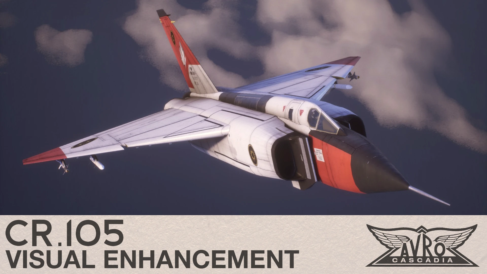
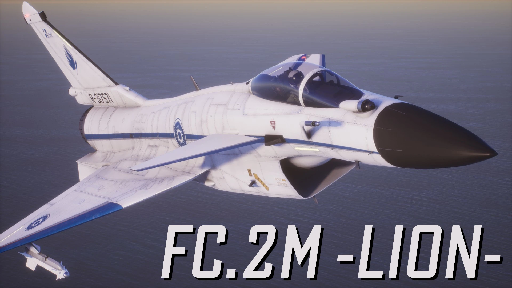
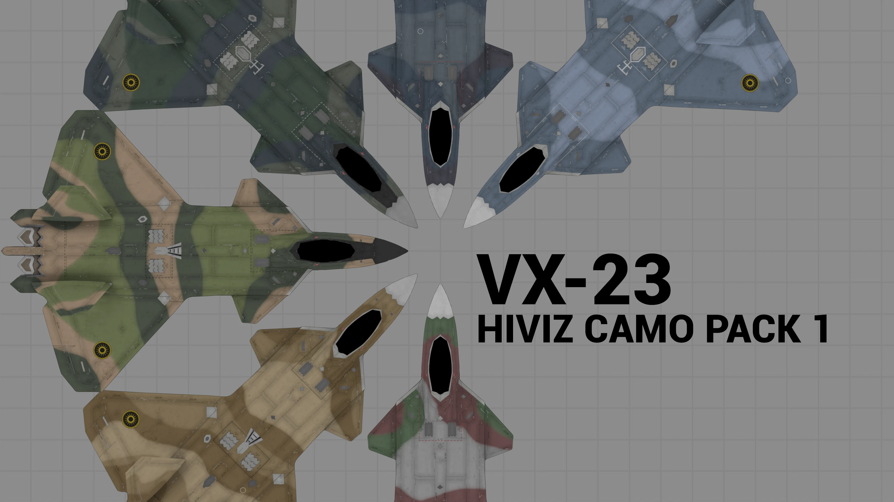
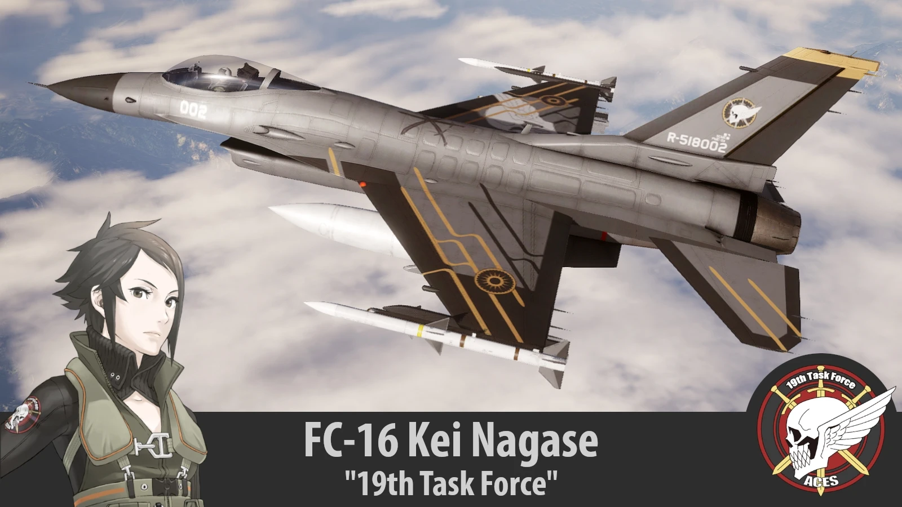
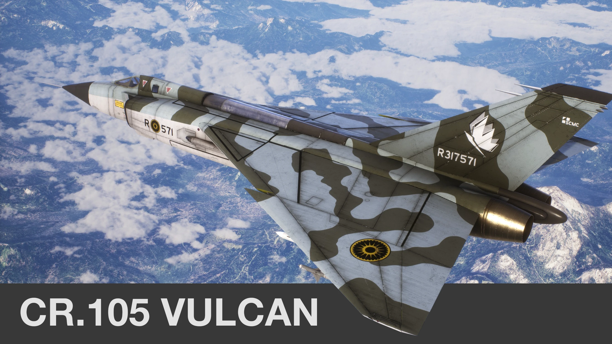
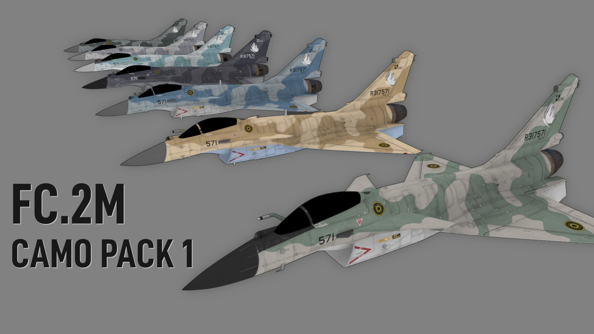
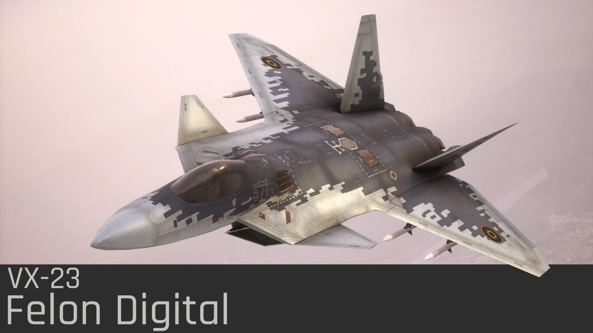
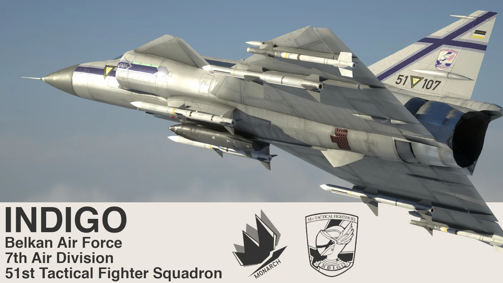
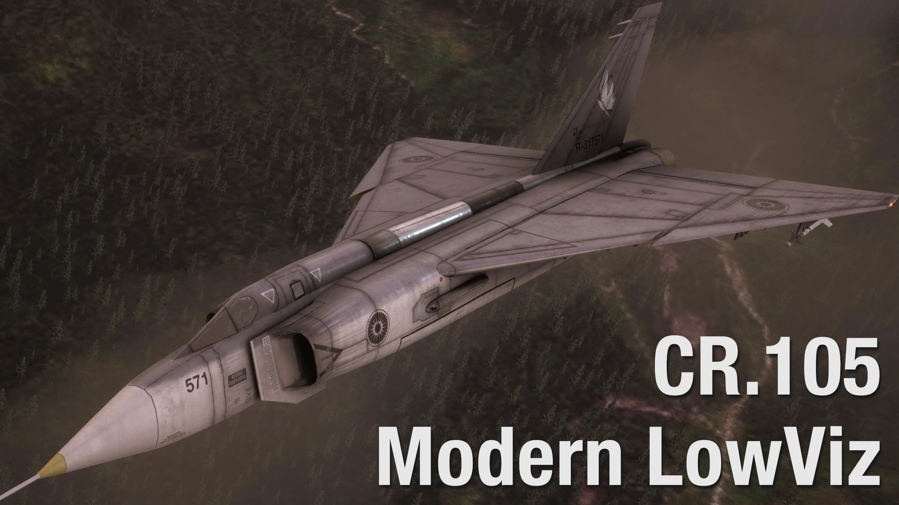
 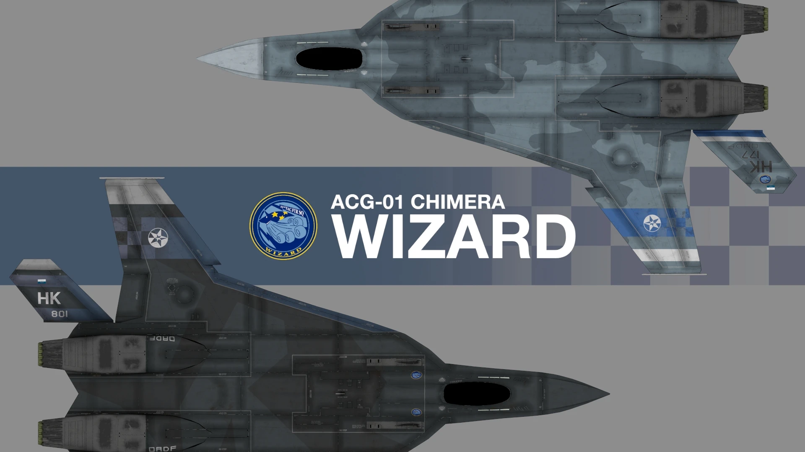
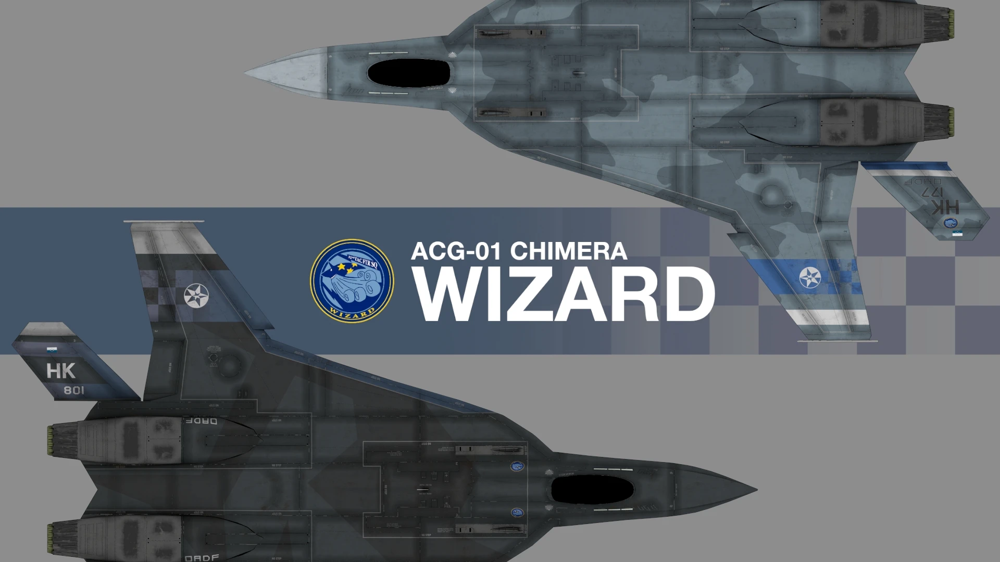